Colorz
![Mockup of an open spread and the front cover of Colorz magazine. The cover has a black background with an illustration
of a pair of colorful, crying eyes by Rocio. The title is set in a pink warped font, and yellow and purple impressions
of the title are pulling away from the background where it's most warped. There are colorful squiggles around the top, bottom, and right edges of the cover.
The spread has a pale yellow background with bright pink and yellow squiggles around it. The word 'Dope' in pale pink goes across
the top left of the spread. There's text on the page which is set around a large cutout image of Rocio's hand holding a sculpted head.](../images/off-the-clock/colorz/9.webp) 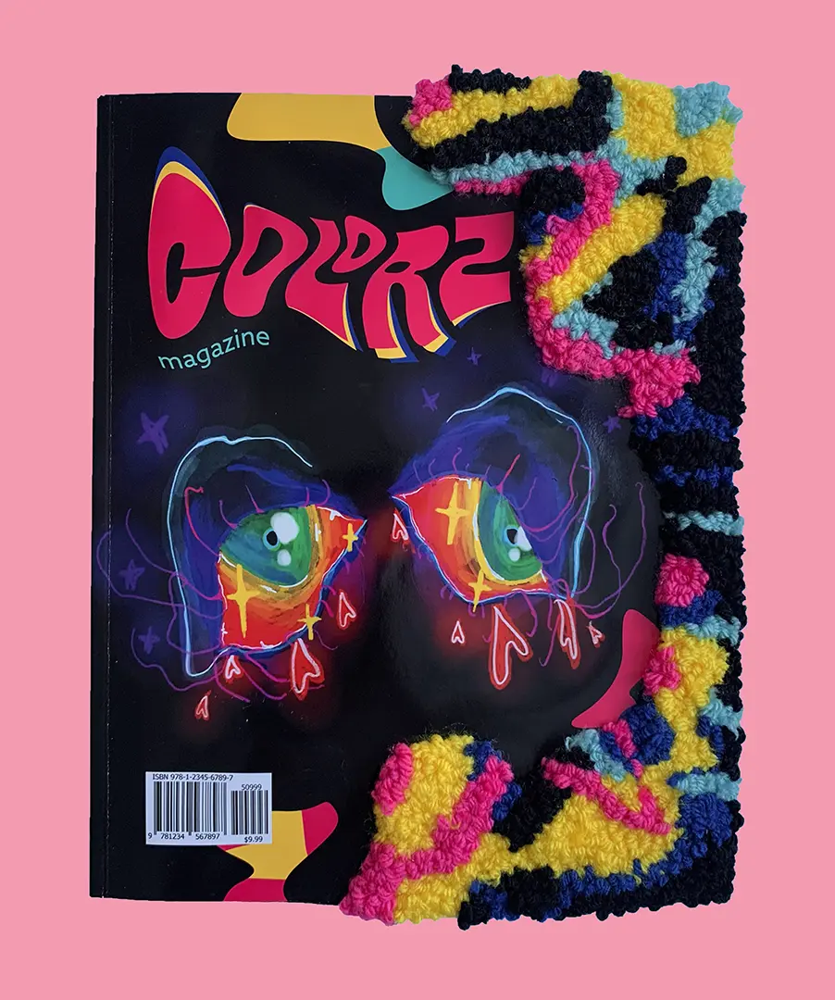
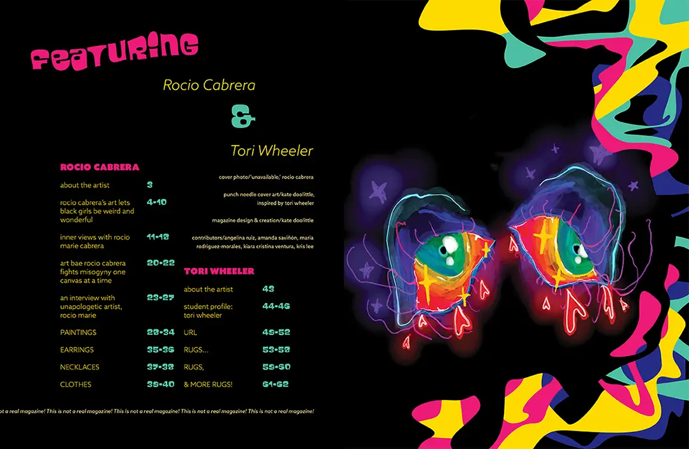
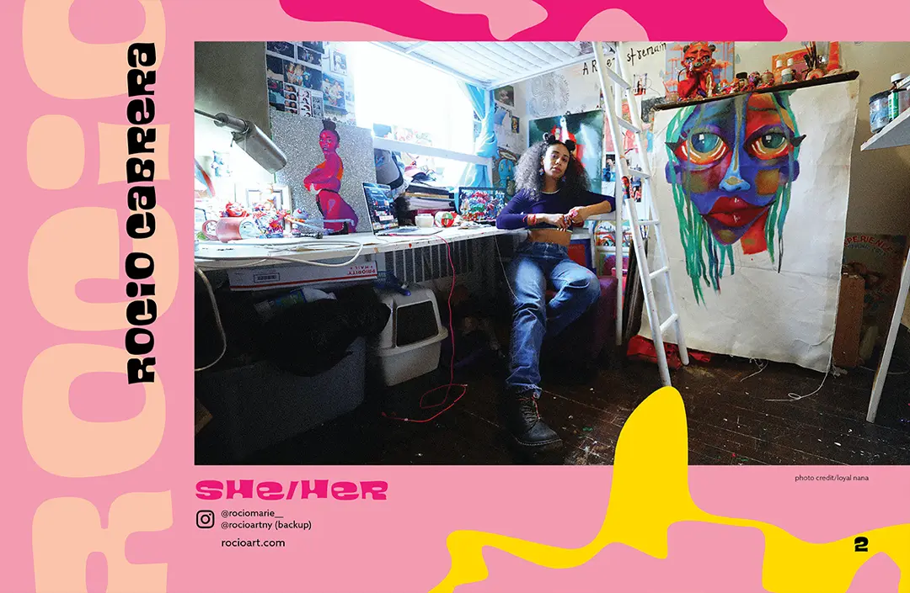
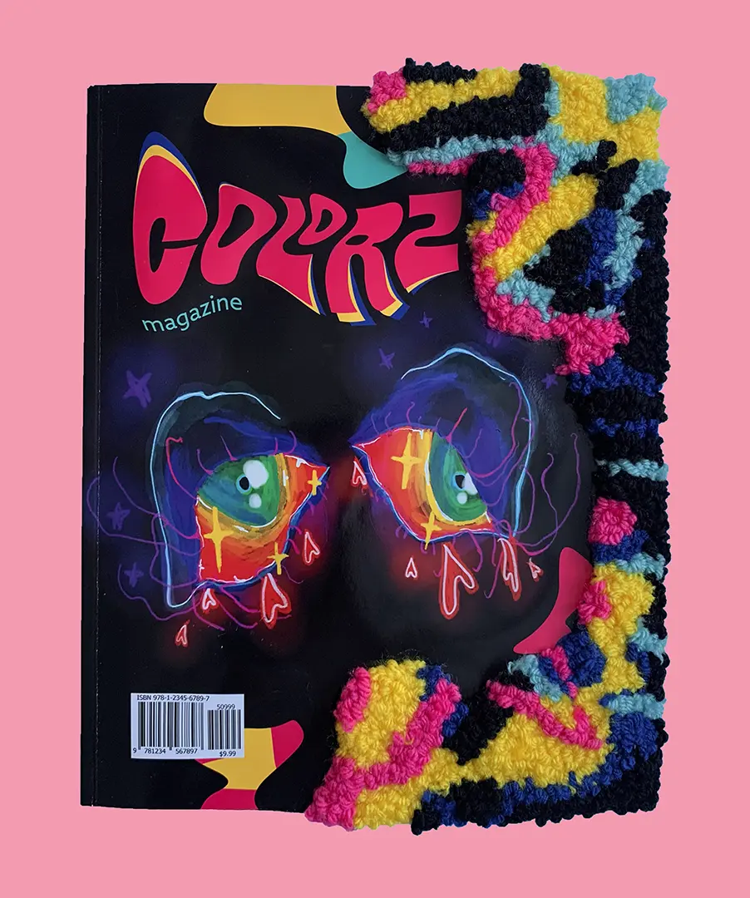
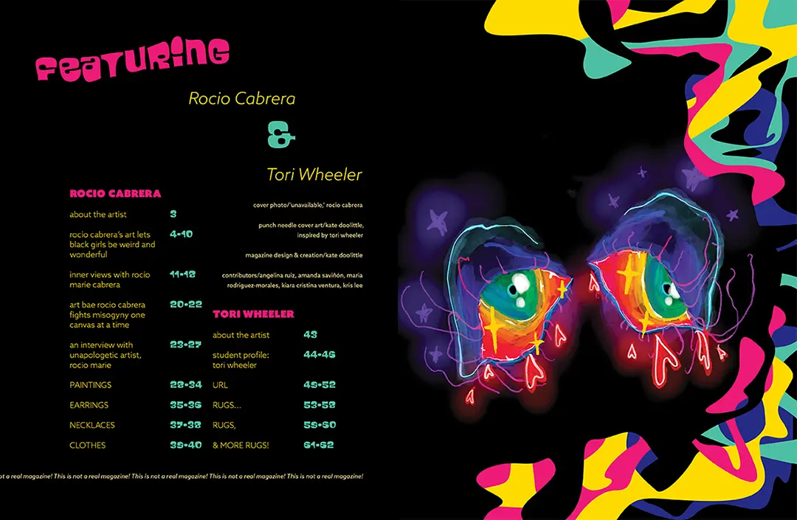
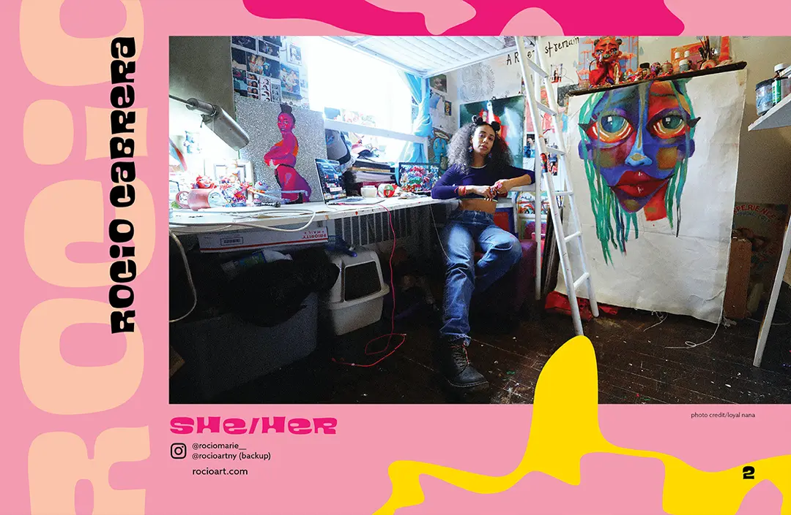
![Magazine spread with a light purple background with bright indigo and coral squiggles. The page includes an story titled 'An interview with unapologetic
artist Rocio Marie'. The world 'unapologetic' has been set in the magazine title font. The inteview was done by Kiara Cristina Ventura and was originally published by
PROCESSA x THE ECSTATIC, formerly ArtsyWindows x The Experience Magazine. The interview is dated April 13, 2017 and the interview text is too small to read. An image
of Rocio's 'ACAB' necklaces starts on the first page, going off the bottom, and resumes at the top of the second page.](../images/off-the-clock/colorz/4.webp)
![Magazine spread with a light pink background and bright pink and yellow squiggles around the page. The title text reads: 'EARRINGS' and there are
cutout images of 6 of Rocio's earring designs. The first are three teeth each on a silver ring, the second are a pair of marijuana leaves with eyes, the third
are cow print stars with rainbow pom poms hanging from them, the fourth are rainbows with holographic clouds, the fifth are holographic speach bubbles that say, 'DEADASS?',
and the sixth are green slimes with slime drops hanging down.](../images/off-the-clock/colorz/5.webp) 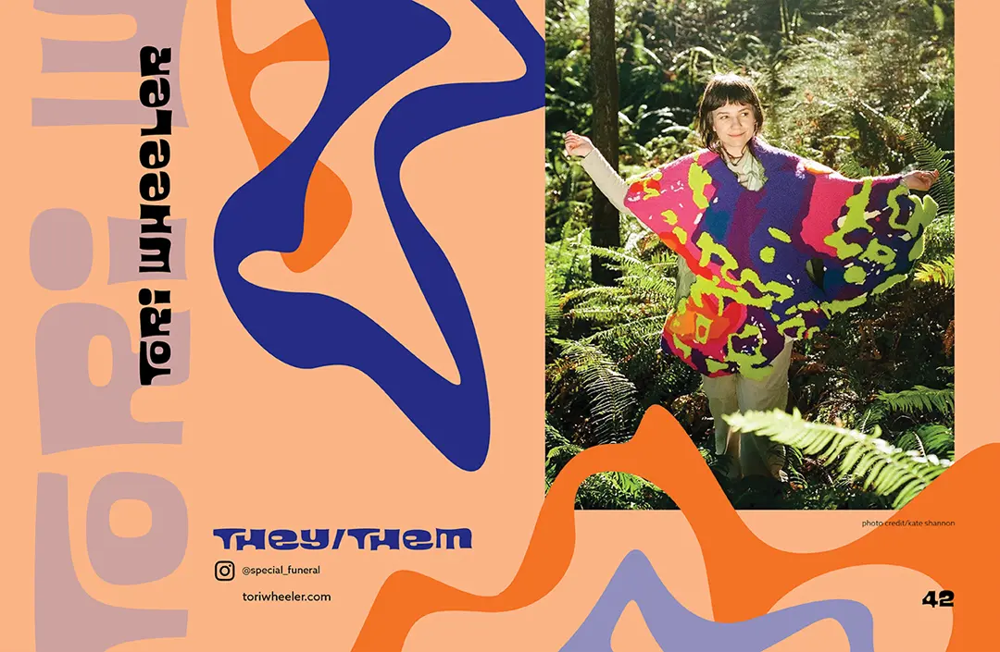
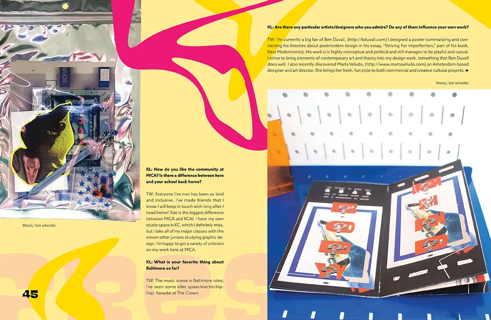
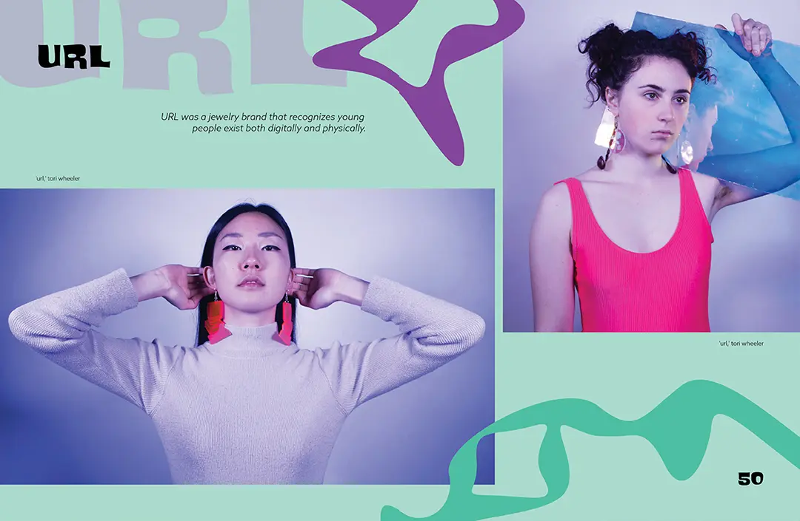
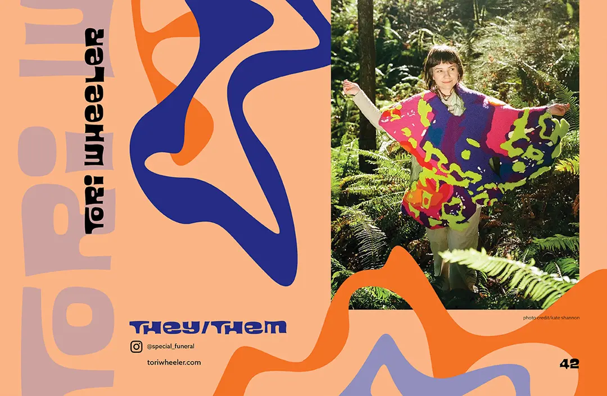
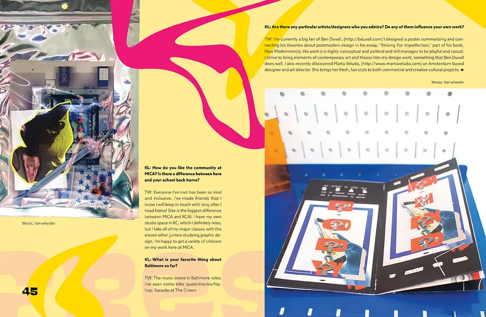
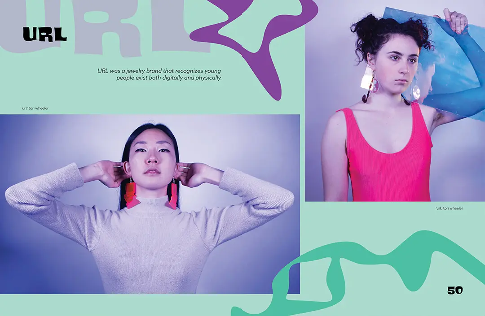
Introducing the coolest fake magazine you've ever seen! Colorz is a 62 page artist mag featuring Rocio Cabrera and Tori Wheeler. I compiled interviews from online sources and images from the artists to create a magazine with bright colors, funky shapes, and a hand-tufted special edition cover.


Rocio
Tori